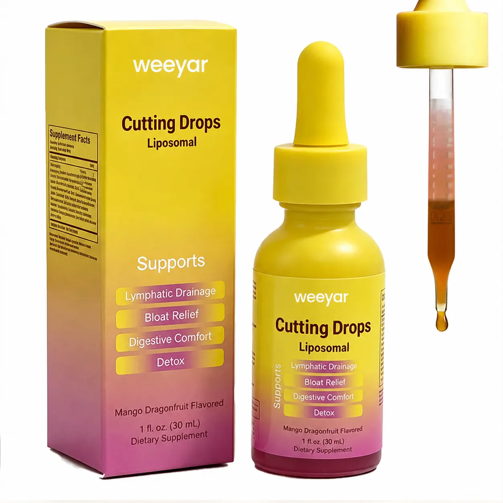
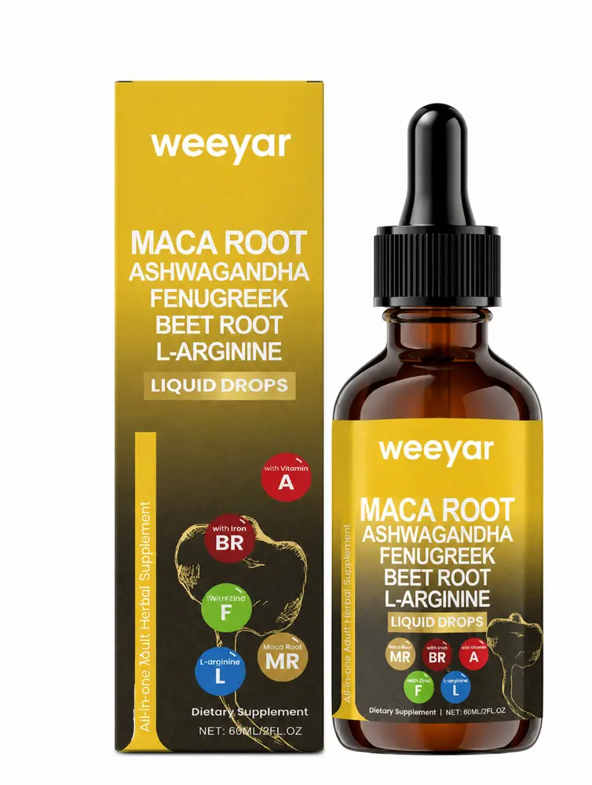
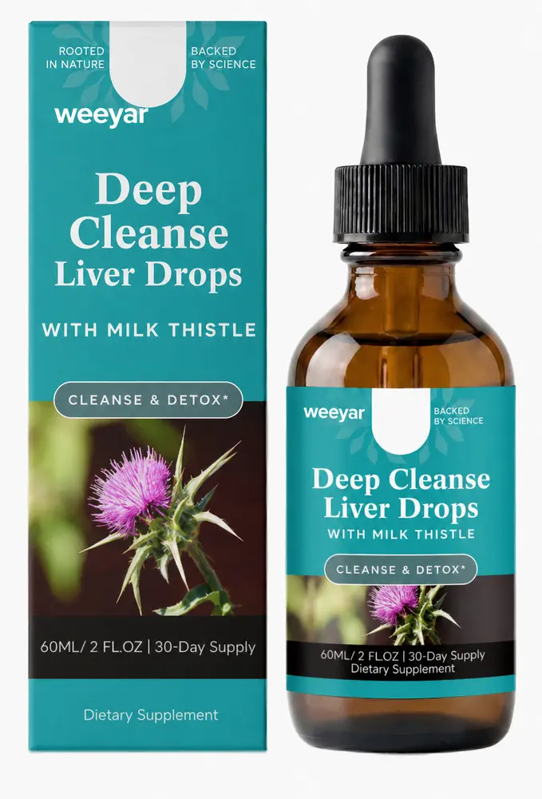

Liquid Drops
Liposomal Cutting Drops
Trending 30 ml mango dragonfruit liquid-drop format for private-label wellness lines.
View Details →Explore portable dropper formats with options for labels, cartons, flavor direction and formula selection. Project details depend on the selected route and destination market.

Trending 30 ml mango dragonfruit liquid-drop format for private-label wellness lines.
View Details →
Herbal liquid drop format featuring maca and complementary botanicals.
View Details →
Botanical liquid drop format designed for daily wellness ranges.
View Details →Tell us the target market, formula or reference product, packaging and estimated quantity.